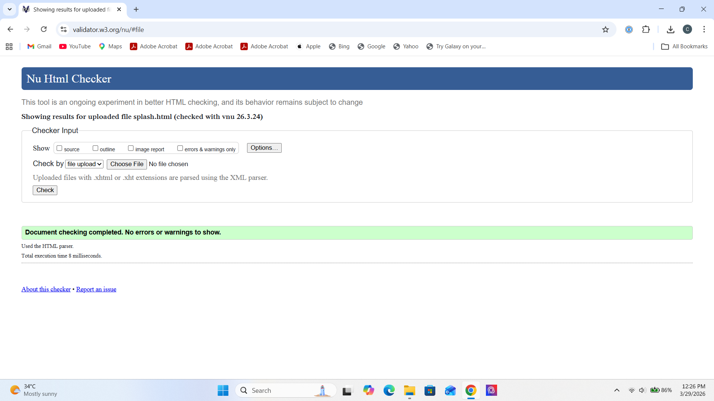
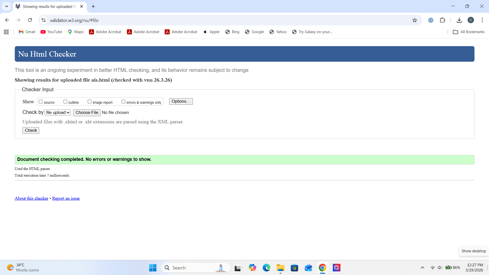
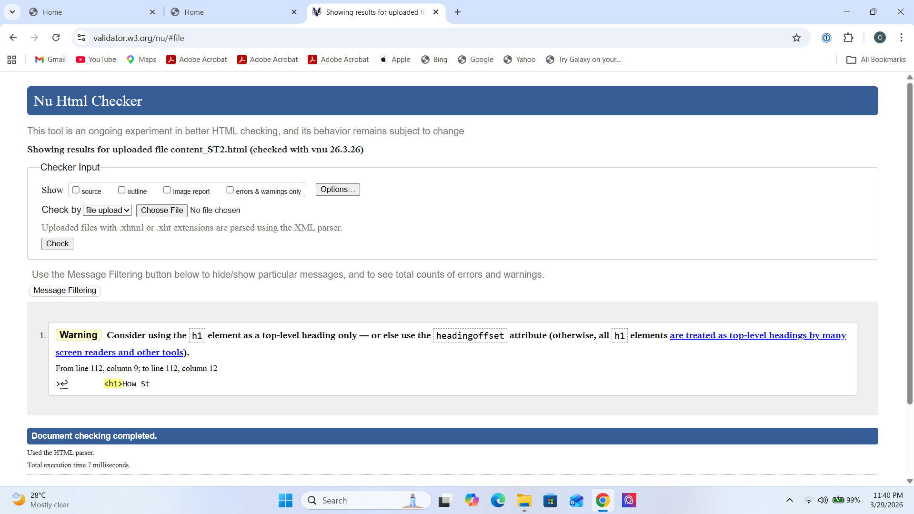

Splash Screen validation report
The Splash Screen (splash.html) was validated using the W3C Markup Validation Service
and passed with no errors. The validator displayed one informational notice
regarding the <meta http-equiv="refresh"> tag used for the automatic redirect.
This is not an error — it is a usability advisory note because some users may not be able to
follow automatic redirects. The tag is required by the coursework specification and was therefore
kept intentionally. No structural or syntax errors were present, confirming that the page uses
valid HTML5 with correctly nested elements and well-formed metadata throughout.

Back to Page Editor page
Action Impact Simulator (AIS) validation report
The Action Impact Simulator (ais.html) was validated using the W3C Markup Validation
Service and passed with no errors. During the initial validation run, one error
was identified: <h2> headings inside the action card
<article> elements broke the document heading hierarchy because the
section-level heading was also an <h2>. This was resolved by changing the
card headings to <h3>, restoring a correct and logical heading order. After
this fix the page validated cleanly with no errors and no warnings. The external JavaScript
file reference (js/ais.js) was also confirmed to be correctly linked.

Back to Page Editor page
Content Page validation report
The Content Page (content_ST2.html) was validated using the W3C Markup Validation
Service and passed with no errors. The validator confirmed that all internal
anchor links using href="#section-id" correctly match the corresponding
id attributes on their target sections, the heading hierarchy from
<h1> to <h2> is properly maintained throughout, and all
images include alt attributes. The embedded <style> block was
also confirmed as correctly formed CSS. No modifications were required after the initial
validation run.
